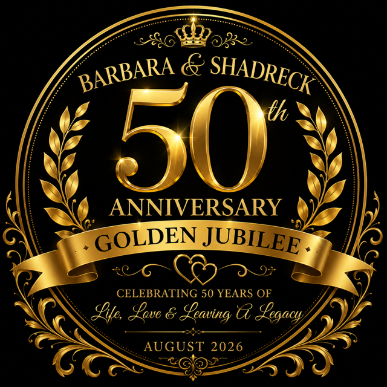

<!DOCTYPE html>
<html lang="en">
<head>
<meta charset="utf-8">
<meta name="viewport" content="width=device-width,initial-scale=1">
<title>Programme — Shadreck &amp; Barbara Golden Jubilee</title>
<meta name="description" content="The order of proceedings for the Golden Jubilee of Shadreck and Barbara Nkala.">
<link rel="preconnect" href="https://fonts.googleapis.com">
<link rel="preconnect" href="https://fonts.gstatic.com" crossorigin>
<link href="https://fonts.googleapis.com/css2?family=Cormorant+Garamond:ital,wght@0,400;0,600;1,400&family=Inter:wght@400;500;600;700&display=swap" rel="stylesheet">
<link rel="stylesheet" href="assets/style.css">
<link rel="icon" href="assets/event-logo.png">
<style>
  body.prog{background:#14110d;color:#f7f1e4;margin:0;overflow:hidden;height:100vh}

  /* ---- shell: programme rail on the left, the big slide on the right ---- */
  .shell{display:grid;grid-template-columns:clamp(260px,20vw,360px) 1fr;height:100vh}
  .shell.solo{grid-template-columns:0 1fr}
  .shell.solo .rail{opacity:0;pointer-events:none}

  /* ---- the rail ---- */
  .rail{
    background:#100d0a;border-right:1px solid rgba(217,185,120,.22);
    display:flex;flex-direction:column;overflow:hidden;transition:opacity .3s ease
  }
  .rail-head{padding:1.5vh 1.4rem 1.1vh;border-bottom:1px solid rgba(217,185,120,.16)}
  .rail-head .t{
    font-family:var(--serif);font-size:1.25rem;color:var(--gold-lt);margin:0;line-height:1.2
  }
  .rail-head .s{
    font-size:.62rem;letter-spacing:.24em;text-transform:uppercase;
    color:#7d7263;margin:.35rem 0 0
  }
  .rail-list{list-style:none;margin:0;padding:.8vh 0 3vh;overflow-y:auto;flex:1;scrollbar-width:thin}
  .rail-list::-webkit-scrollbar{width:5px}
  .rail-list::-webkit-scrollbar-thumb{background:rgba(217,185,120,.28);border-radius:3px}

  .rail-item{
    display:grid;grid-template-columns:34px 1fr;gap:.55rem;align-items:start;
    width:100%;text-align:left;background:none;border:0;cursor:pointer;
    padding:.62rem 1.1rem .62rem .9rem;position:relative;
    font-family:var(--sans);color:#8d8270;font-size:.86rem;line-height:1.3;
    transition:color .25s ease,background .25s ease
  }
  .rail-item .n{
    font-size:.68rem;letter-spacing:.1em;color:#5f564a;padding-top:.2rem;
    font-variant-numeric:tabular-nums;text-align:right
  }
  .rail-item .t{overflow-wrap:break-word;hyphens:none}
  /* the tracker line running down the numbers */
  .rail-item::before{
    content:'';position:absolute;left:1.42rem;top:0;bottom:0;width:1px;
    background:rgba(217,185,120,.16)
  }
  .rail-item:first-child::before{top:50%}
  .rail-item:last-child::before{bottom:50%}
  .rail-item::after{
    content:'';position:absolute;left:calc(1.42rem - 3px);top:.72rem;
    width:7px;height:7px;border-radius:50%;background:#3a332a;
    border:1px solid rgba(217,185,120,.3);transition:.25s
  }

  .rail-item.done{color:#6d6355}
  .rail-item.done::before{background:rgba(217,185,120,.45)}
  .rail-item.done::after{background:var(--gold-dk);border-color:var(--gold-dk)}

  /* where we are now — the marker */
  .rail-item.now{
    color:#fff;background:linear-gradient(90deg,rgba(184,137,59,.22),transparent);
    font-weight:600;font-size:.95rem
  }
  .rail-item.now .n{color:var(--gold-lt)}
  .rail-item.now::after{
    background:var(--gold);border-color:var(--gold);width:11px;height:11px;
    left:calc(1.42rem - 5px);top:.62rem;
    box-shadow:0 0 0 4px rgba(184,137,59,.22)
  }
  /* The marker must never be a grid child, or it steals a column and the
     labels wrap one word per line. */
  .rail-item .marker{
    position:absolute;left:0;top:0;bottom:0;width:3px;background:transparent
  }
  .rail-item.now .marker{background:var(--gold)}
  .rail-item:hover:not(.now){color:#cfc3ab;background:rgba(255,255,255,.03)}

  .rail-foot{
    padding:1.1vh 1.1rem;border-top:1px solid rgba(217,185,120,.16);
    display:flex;gap:.5rem;align-items:center;justify-content:space-between
  }
  .rail-foot a,.rail-foot button{
    font-family:var(--sans);font-size:.72rem;font-weight:600;color:var(--gold-lt);
    background:rgba(255,255,255,.05);border:1px solid rgba(217,185,120,.35);
    border-radius:999px;padding:.4rem .8rem;cursor:pointer;text-decoration:none
  }
  .rail-foot a:hover,.rail-foot button:hover{background:var(--gold);color:#241f19}
  .rail-pos{font-size:.66rem;letter-spacing:.16em;text-transform:uppercase;color:#7d7263}

  /* ---- the slide ---- */
  .prog-stage{
    display:flex;align-items:center;justify-content:center;
    padding:6vh 5vw;text-align:center;overflow:hidden
  }
  .prog-slide{
    max-width:1400px;width:100%;opacity:0;transform:translateY(16px);
    transition:opacity .8s ease,transform .8s ease
  }
  .prog-slide.in{opacity:1;transform:none}

  .p-num{
    font-size:.68rem;letter-spacing:.34em;text-transform:uppercase;
    color:#7d7263;margin:0 0 2rem;font-weight:600
  }
  .p-kicker{
    font-size:clamp(.72rem,.95vw,1rem);letter-spacing:.32em;text-transform:uppercase;
    color:var(--gold-lt);font-weight:600;margin:0 0 1.5rem
  }
  .p-title{
    font-family:var(--serif);font-weight:600;line-height:1.06;margin:0;
    font-size:clamp(2.2rem,5.2vw,5rem);
    background:linear-gradient(160deg,#f6e6bd,var(--gold-lt),var(--gold));
    -webkit-background-clip:text;background-clip:text;color:transparent
  }
  .p-sub{
    font-family:var(--serif);font-style:italic;font-size:clamp(1.2rem,2.2vw,2.3rem);
    color:#f2e9d6;margin:1.3rem 0 0;line-height:1.3
  }
  .p-time{
    font-family:var(--serif);font-weight:600;line-height:1;
    font-size:clamp(1.9rem,4.2vw,4rem);margin:0 0 1.4rem;
    color:var(--gold-lt);letter-spacing:.01em
  }
  .p-time span{
    display:block;font-family:var(--sans);font-size:.6rem;font-weight:700;
    letter-spacing:.34em;text-transform:uppercase;color:#6f6555;margin-bottom:.7rem
  }
  .rail-item .mins{
    display:block;font-style:normal;font-size:.62rem;letter-spacing:.16em;
    text-transform:uppercase;color:#6f6555;margin-top:.15rem
  }
  .rail-item.now .mins{color:var(--gold-lt)}
  /* hymn words: full width, one line of the hymn per line on screen */
  .p-verse{margin:2.4rem auto 0;max-width:min(94%,1150px)}
  .p-verse p{
    font-family:var(--serif);font-size:clamp(1.15rem,2.15vw,2.15rem);line-height:1.5;
    margin:0 0 .35rem;color:#f7f1e4
  }

  /* ---- entertainment: give the music its own look ---- */
  .prog-slide.feature{position:relative}
  .prog-slide.feature::before{
    content:'';position:absolute;left:50%;top:50%;transform:translate(-50%,-50%);
    width:120%;height:150%;z-index:-1;
    background:radial-gradient(ellipse at center,rgba(184,137,59,.20),transparent 62%)
  }
  .prog-slide.feature .p-kicker{color:#f0d69b}
  .prog-slide.feature .p-kicker::before{content:'\266A\00a0\00a0'}
  .prog-slide.feature .p-kicker::after{content:'\00a0\00a0\266A'}
  .prog-slide.feature .p-title{
    background:linear-gradient(160deg,#fff3d4,#f0d69b,var(--gold));
    -webkit-background-clip:text;background-clip:text
  }
  .prog-slide.feature .p-sub{color:#f6ecd6}
  .rail-item .note{color:var(--gold-dk);font-style:normal;margin-right:.25rem}
  .rail-item.now .note{color:var(--gold)}
  .p-rule{width:70px;height:1px;background:rgba(217,185,120,.6);margin:2.2rem auto;position:relative}
  .p-rule::after{
    content:'';position:absolute;left:50%;top:50%;width:7px;height:7px;
    transform:translate(-50%,-50%) rotate(45deg);background:var(--gold)
  }
  .p-lines{margin:0;padding:0;list-style:none}
  .p-lines li{font-size:clamp(1rem,1.6vw,1.7rem);color:#e6dcc6;margin:.45rem 0;line-height:1.4}
  .p-lines li.name{font-family:var(--serif);font-size:clamp(1.3rem,2.2vw,2.3rem);color:#fff;font-weight:600}
  .p-lines li.quiet{font-size:clamp(.88rem,1.15vw,1.2rem);color:#a3987f;font-style:italic}
  .p-crest{width:min(22vh,210px);margin:0 auto 2rem;mix-blend-mode:screen}

  .p-pair{display:grid;grid-template-columns:1fr 1fr;gap:3.5vw;margin-top:2.4rem;text-align:center}
  .p-pair .p-kicker{margin-bottom:.8rem}
  .p-pair .p-title{font-size:clamp(1.4rem,2.6vw,2.4rem)}
  .p-pair .p-sub{font-size:clamp(.95rem,1.3vw,1.3rem);margin-top:.6rem}

  /* ---- phone / tablet: rail becomes a slim strip on top ---- */
  @media(max-width:900px){
    body.prog{overflow:auto;height:auto}
    .shell{grid-template-columns:1fr;height:auto}
    .shell.solo{grid-template-columns:1fr}
    .rail{border-right:0;border-bottom:1px solid rgba(217,185,120,.22);max-height:34vh}
    .rail-list{padding-bottom:1vh}
    .prog-stage{min-height:66vh;padding:5vh 7vw}
    .p-pair{grid-template-columns:1fr;gap:2.4rem}
  }
</style>
</head>
<body class="prog">

<div class="shell" id="shell">

  <aside class="rail" id="rail">
    <div class="rail-head">
      <p class="t">Programme</p>
      <p class="s">Golden Jubilee &middot; 29 August</p>
    </div>
    <ul class="rail-list" id="rail-list"></ul>
    <div class="rail-foot">
      <span class="rail-pos" id="pos"></span>
      <div style="display:flex;gap:.4rem">
        <button id="btn-prev" title="Previous">&larr;</button>
        <button id="btn-next" title="Next">&rarr;</button>
        <button id="btn-full" title="Fullscreen">&#9974;</button>
        <a href="index.html" title="Exit">&#10005;</a>
      </div>
    </div>
  </aside>

  <div class="prog-stage"><div class="prog-slide" id="slide"></div></div>
</div>

<script>
const SLIDES = [
  { crest:true,
    kicker:'Shadreck &amp; Barbara Nkala',
    title:'Golden Jubilee Celebration',
    sub:'Celebrating 50 Years of Life, Love &amp; Legacy',
    lines:[{t:'&ldquo;We Were 2&hellip; Now We Are Many&rdquo;', c:'quiet'}],
    tag:'Welcome' },

  { time:'3:30 &ndash; 5:00 PM', feature:true,
    kicker:'The celebration begins the moment you arrive',
    title:'Golden Hour Lawn Reception',
    sub:'Welcome Drinks &middot; Canap&eacute;s &middot; Photography',
    lines:[
      {t:'Family &amp; Guest Portraits &middot; Mingling &amp; Fellowship'},
      {t:'Live Band &middot; Umkhathi Wesizwe Traditional Dancers', c:'quiet'}],
    tag:'Reception' },

  { time:'5:00 &ndash; 5:15 PM',
    kicker:'eBika &middot; eHaya',
    title:'Ceremonial Proclamation &amp; Grand Entrance',
    sub:'The MC &amp; Poet Leads the Procession',
    lines:[
      {t:'The generations that have come from their union', c:'quiet'},
      {t:'culminating in the arrival of Shadreck &amp; Barbara Nkala', c:'quiet'}],
    tag:'Grand Entrance' },

  { lyric:true, feature:true,
    kicker:'Official Entrance Song &mdash; please join in',
    title:'Count Your Blessings',
    verse:[
      'When upon life&rsquo;s billows you are tempest-tossed,',
      'When you are discouraged, thinking all is lost,',
      'Count your many blessings, name them one by one,',
      'And it will surprise you what the Lord hath done.'],
    tag:'Entrance Song' },

  { lyric:true, feature:true,
    kicker:'Chorus',
    title:'Count Your Blessings',
    verse:[
      'Count your blessings, name them one by one,',
      'Count your blessings, see what God hath done;',
      'Count your blessings, name them one by one,',
      'Count your many blessings, see what God hath done.'],
    tag:'Chorus' },

  { time:'5:15 PM',
    kicker:'Before Anything Else',
    title:'Opening Prayer &amp; Dedication',
    lines:[{t:'Bishop Sindah Ngulube', c:'name'}],
    tag:'Opening Prayer' },

  { time:'5:20 PM',
    kicker:'Golden Jubilee Sermon',
    title:'A Word for Fifty Years',
    lines:[{t:'Bishop Ngwiza Mnkandla', c:'name'}],
    tag:'Sermon' },

  { time:'5:30 &ndash; 5:50 PM',
    kicker:'Their Story',
    title:'The Two Who Started It All',
    pair:[
      { kicker:'About Shadreck', title:'Mrs Grace Dube',  sub:'5:30 &ndash; 5:40' },
      { kicker:'About Barbara',  title:'Mrs Nomsa Jowah', sub:'5:41 &ndash; 5:50' }],
    tag:'Their Story' },

  { time:'5:50 &ndash; 6:10 PM', feature:true,
    kicker:'Please be seated',
    title:'Dinner Is Served',
    sub:'The band plays on',
    tag:'Dinner' },

  { time:'6:10 &ndash; 6:35 PM',
    kicker:'Round One',
    title:'Tributes',
    sub:'Words from those who know them best',
    lines:[
      {t:'6:10&nbsp; Mr Alex Nululeko Nkala', c:'name'},
      {t:'6:15&nbsp; Ms Dumisani Nomagugu Nkala', c:'name'},
      {t:'6:20&nbsp; Mr &amp; Mrs Chaka &amp; Faustina Bwanya', c:'name'},
      {t:'6:25&nbsp; Mr Gilbert Gumpo', c:'name'},
      {t:'6:30&nbsp; Ms Virginia Phiri', c:'name'}],
    tag:'Tributes I' },

  { time:'6:35 &ndash; 6:45 PM', feature:true,
    kicker:'Live Entertainment',
    title:'Umkhathi Wesizwe',
    sub:'Traditional Dancers &mdash; Act Three',
    tag:'Dancers III' },

  { time:'6:45 &ndash; 7:10 PM',
    kicker:'Round Two',
    title:'Tributes',
    sub:'The story continues, in other voices',
    lines:[
      {t:'6:45&nbsp; Mr &amp; Mrs Tawanda &amp; Sharon Bwanya', c:'name'},
      {t:'6:50&nbsp; Mr &amp; Mrs Thurston &amp; Ntando Davis', c:'name'},
      {t:'6:55&nbsp; Mr &amp; Mrs Ndaba &amp; Tendayi Nkala', c:'name'},
      {t:'7:00&nbsp; Mr Edgar Nxumalo', c:'name'},
      {t:'7:05&nbsp; Mrs Phathi Mavengere', c:'name'}],
    tag:'Tributes II' },

  { time:'7:10 &ndash; 7:20 PM', feature:true,
    kicker:'Live Entertainment',
    title:'The Band Plays',
    sub:'Dessert served at the tables',
    lines:[{t:'Please stay seated &mdash; the programme continues', c:'quiet'}],
    tag:'Dessert' },

  { time:'7:20 &ndash; 7:40 PM',
    kicker:'The Next Generation',
    title:'A Golden Rose From Each of Us',
    sub:'A Special Tribute from the Grandchildren',
    lines:[
      {t:'The Final Golden Bouquet', c:'name'},
      {t:'Presentation led by Thando on behalf of the Grandchildren', c:'quiet'}],
    tag:'Grandchildren' },

  { time:'7:40 &ndash; 7:50 PM', feature:true,
    kicker:'Live Entertainment',
    title:'Umkhathi Wesizwe',
    sub:'Traditional Dancers &mdash; Act Four',
    tag:'Dancers IV' },

  { time:'7:50 &ndash; 7:55 PM',
    kicker:'Special Nkala Tribute',
    title:'A Word from the Family',
    lines:[{t:'Mr Herbert Nkala', c:'name'}],
    tag:'Nkala Tribute' },

  { time:'7:55 &ndash; 8:05 PM', feature:true,
    kicker:'Take to the Floor',
    title:'Come &amp; Dance!',
    sub:'Live Band &middot; Dance Floor Open',
    tag:'Dancing' },

  { time:'8:05 &ndash; 8:30 PM',
    kicker:'Open Mic',
    title:'Voices of Love',
    sub:'Friends &middot; Church &middot; Extended Family',
    lines:[{t:'Six voices from the floor', c:'quiet'}],
    tag:'Voices of Love' },

  { time:'8:30 &ndash; 8:40 PM',
    kicker:'Fifty Golden Years',
    title:'The Cake Ceremony',
    sub:'Cake Cutting &middot; Anniversary Toast &middot; Celebration Photographs',
    lines:[{t:'The band plays', c:'quiet'}],
    tag:'Cake &amp; Toast' },

  { crest:true,
    time:'8:40 &ndash; 9:00 PM',
    kicker:'The Golden Jubilee Moment',
    title:'Walking Into the Sunset Together',
    sub:'&ldquo;The Best Is Yet to Come&rdquo;',
    lines:[
      {t:'Mr &amp; Mrs Shadreck &amp; Barbara Nkala', c:'name'},
      {t:'50 Years &middot; Reflections &middot; Gratitude &middot; Wisdom &middot; The Future', c:'quiet'}],
    tag:'The Couple' },

  { time:'9:00 &ndash; 9:10 PM',
    kicker:'Marriage &amp; Family Blessing',
    title:'A Blessing Over the Generations',
    lines:[
      {t:'Pastor Jongen Ncube', c:'name'},
      {t:'Children &amp; Grandchildren Gather Around Gogo &amp; Khulu', c:'quiet'}],
    tag:'Blessing' },

  { time:'9:10 PM',
    kicker:'On Behalf of the Family',
    title:'Vote of Thanks',
    lines:[{t:'Mr Ndabenhle Z Nkala', c:'name'}],
    tag:'Vote of Thanks' },

  { feature:true,
    kicker:'And Now&hellip;',
    title:'We Celebrate!',
    sub:'Live Band &middot; Dancing &middot; Family &middot; Fellowship',
    tag:'Celebration' },

  { crest:true,
    title:'Fifty Years. Two Hearts. One Journey.',
    sub:'Many Generations. An Extraordinary Legacy.',
    tag:'Close' }
];

/* ------------------------------------------------------------------
   Programme presentation.

   Left: the whole running order, with a tracker showing what is done,
   what is happening now, and what is still to come — so the room can
   see where it is in the evening at a glance.
   Right: the moment itself, big.

   Driven by hand: a running order never survives contact with a live
   event, so the MC advances it as things actually unfold.
------------------------------------------------------------------- */

const slideEl = document.getElementById('slide');
const listEl  = document.getElementById('rail-list');
const posEl   = document.getElementById('pos');
const shell   = document.getElementById('shell');
let i = 0;

/* ---------- the rail ---------- */
listEl.innerHTML = SLIDES.map((s, n) => `
  <li>
    <button class="rail-item" data-n="${n}">
      <span class="marker"></span>
      <span class="n">${String(n + 1).padStart(2, '0')}</span>
      <span class="t">${s.feature ? '<em class="note">&#9834;</em>' : ''}${s.tag}${
        s.time ? `<em class="mins">${s.time}</em>` : ''}</span>
    </button>
  </li>`).join('');

const items = [...listEl.querySelectorAll('.rail-item')];

listEl.addEventListener('click', e => {
  const b = e.target.closest('.rail-item');
  if (b) go(Number(b.dataset.n));
});

function paintRail(){
  items.forEach((el, n) => {
    el.classList.toggle('done', n < i);
    el.classList.toggle('now',  n === i);
  });
  /* keep the current moment in view without yanking the list about */
  items[i].scrollIntoView({ block: 'nearest', behavior: 'smooth' });
  posEl.textContent = `${i + 1} of ${SLIDES.length}`;
}

/* ---------- the slide ---------- */
function render(s, n){
  const crest  = s.crest  ? '' : '';
  const kicker = s.kicker ? `<p class="p-kicker">${s.kicker}</p>` : '';
  const title  = s.title  ? `<h1 class="p-title">${s.title}</h1>` : '';
  const sub    = s.sub    ? `<p class="p-sub">${s.sub}</p>` : '';
  const lines  = s.lines
    ? `<div class="p-rule"></div><ul class="p-lines">${
        s.lines.map(l => `<li class="${l.c || ''}">${l.t}</li>`).join('')}</ul>`
    : '';
  const pair = s.pair
    ? `<div class="p-pair">${s.pair.map(p => `
        <div>
          ${p.kicker ? `<p class="p-kicker">${p.kicker}</p>` : ''}
          <h2 class="p-title">${p.title}</h2>
          ${p.sub ? `<p class="p-sub">${p.sub}</p>` : ''}
        </div>`).join('')}</div>`
    : '';

  const time = s.time
    ? `<p class="p-time"><span>On the night</span>${s.time}</p>` : '';

  /* hymn words for the big screen — bigger, and one line per line */
  const verse = s.verse
    ? `<div class="p-verse">${s.verse.map(l => `<p>${l}</p>`).join('')}</div>` : '';

  const foot = s.foot
    ? `<ul class="p-lines" style="margin-top:2.4rem">${
        s.foot.map(l => `<li class="${l.c || ''}">${l.t}</li>`).join('')}</ul>`
    : '';

  return `<p class="p-num">Moment ${String(n + 1).padStart(2,'0')} of ${SLIDES.length}</p>
          ${time}${crest}${kicker}${title}${sub}${verse}${lines}${pair}${foot}`;
}

function go(n){
  i = (n + SLIDES.length) % SLIDES.length;
  slideEl.classList.remove('in');
  setTimeout(() => {
    slideEl.innerHTML = render(SLIDES[i], i);
    slideEl.classList.toggle('feature', !!SLIDES[i].feature);
    requestAnimationFrame(() => slideEl.classList.add('in'));
  }, 240);
  paintRail();
  history.replaceState(null, '', '#' + (i + 1));
}

/* ---------- controls ---------- */
document.getElementById('btn-next').addEventListener('click', () => go(i + 1));
document.getElementById('btn-prev').addEventListener('click', () => go(i - 1));
document.getElementById('btn-full').addEventListener('click', toggleFull);

function toggleFull(){
  document.fullscreenElement ? document.exitFullscreen()
                             : document.documentElement.requestFullscreen();
}

document.addEventListener('keydown', e => {
  if (e.key === 'ArrowRight' || e.key === ' ' || e.key === 'PageDown'){ e.preventDefault(); go(i + 1); }
  if (e.key === 'ArrowLeft'  || e.key === 'PageUp'){ e.preventDefault(); go(i - 1); }
  if (e.key === 'ArrowDown'){ e.preventDefault(); go(i + 1); }
  if (e.key === 'ArrowUp'){   e.preventDefault(); go(i - 1); }
  if (e.key === 'Home') go(0);
  if (e.key === 'End')  go(SLIDES.length - 1);
  if (e.key === 'f' || e.key === 'F') toggleFull();
  /* L hides the rail for a full-bleed moment — the cake, the blessing */
  if (e.key === 'l' || e.key === 'L') shell.classList.toggle('solo');
  if (e.key === 'Escape' && !document.fullscreenElement) location.href = 'index.html';
});

/* Tap the right side of the slide to advance, left side to go back —
   for a tablet on the lectern. The rail handles its own clicks. */
document.querySelector('.prog-stage').addEventListener('click', e => {
  go(e.clientX > window.innerWidth / 2 ? i + 1 : i - 1);
});

/* Open at #7 to start on the seventh moment. */
go((parseInt(location.hash.slice(1), 10) || 1) - 1);
</script>
</body>
</html>
